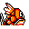

#129
Magikarp
Water
In the distant past, it was somewhat stronger than the horribly weak descendants that exist today
Base stats Total 185
HP20
Attack10
Defense55
Speed80
Special20
Details
- Species
- Fish
- Height
- 2'11"
- Weight
- 22.0 lb
- Catch rate
- 255
- Base exp
- 20
- Growth
- Slow
Level-up moves
LevelMoveType
StartWater GunWater
StartTackleNormal
Lv 9Water GunWater
Lv 11TackleNormal
Lv 25BubblebeamWater
Lv 28WaterfallWater
Lv 38SurfWater
Lv 44Hydro PumpWater
TM / HM
Tmhm